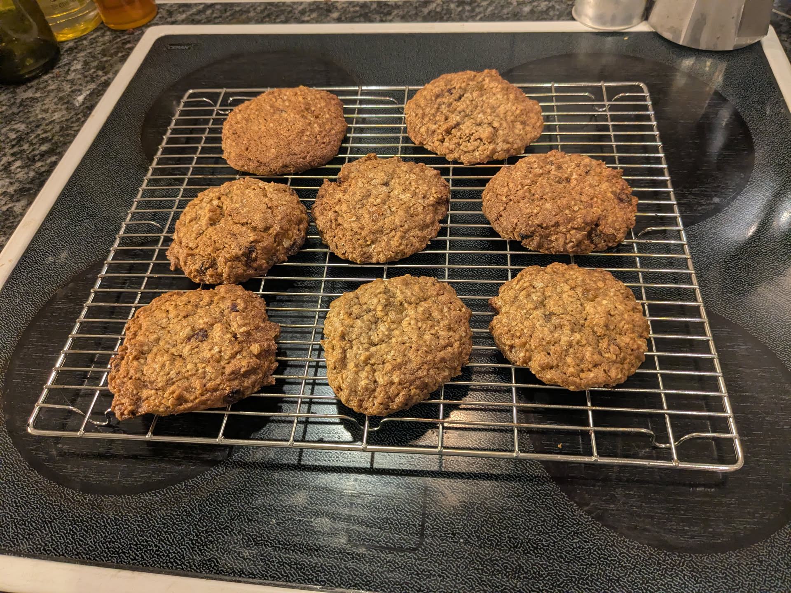

Cookies aux flocons d'avoine et aux raisins

Pour une bonne quinzaine de gros cookies :
- 225g de beurre
- 210g de flocons d'avoine
- 170g de farine
- Une demi-cuillère à café de bicarbonate de soude
- Une demi-cuillère à café de levure chimique
- 160g de sucre brun
- 40g de sucre blanc
- Deux cuillères à café d'extrait de vanille
- Deux gros œufs
- 150g de raisins
- Une cuillère à café de cannelle en poudre
- Une belle pincée de noix de muscade râpée
- Une belle pincée de sel
- Faire préchauffer le four à 175°C. Faire fondre le beurre dans une petite casserole jusqu'à ce que ça commence à brunir et à sentir bon. Enlever du feu, verser dans un gros saladier en métal (ou le bol d'un robot), et immédiatement ajouter la cannelle et la muscade râpée. Laisser refroidir une dizaine de minutes.
- Pendant ce temps, disposer les flocons d'avoine sur une grosse plaque de four, et enfourner 10-15 minutes en mélangeant de temps en temps. Une fois que ça a bien toasté, enlever du four, éteindre le four, et laisser refroidir une dizaine de minutes.
- Pendant ce temps, mélanger la farine, le sel, le bicarbonate de soude, et la levure chimique dans un petit bol.
- Mélanger le beurre et les sucres avec un batteur électrique jusqu'à ce que ça soit à peu près homogène. Ajouter les œufs un par un en continuant à battre.
- Ajouter la farine, les raisins et les flocons d'avoine et mélanger à la cuillère ou à la maryse, en s'arrêtant dès qu'il n'y a plus de trace de farine. Laisser refroidir au frigo pendant deux heures.
- Refaire préchauffer le four à 175°C. Avec une cuillère à glace, faire des boules de pâtes et les disposer sur deux plaques de four recouvertes de papier sulfurisé. Aplatir chaque boule pour former des cylindres grossiers (de 2.5cm de hauteur environ).
- Enfourner, une plaque à la fois, pendant environ 12-14 minutes ; il faut que les bords prennent de la couleur mais que le centre reste assez mou. Laisser tiédir sur la plaque pendant un quart d'heure, puis transférer sur une grille pour laisser refroidir entièrement.
Remarque : on peut remplacer les raisins par d'autres fruits secs, comme par exemple des canneberges ou des abricots secs (coupés en bouts de la taille d'un raisin sec).